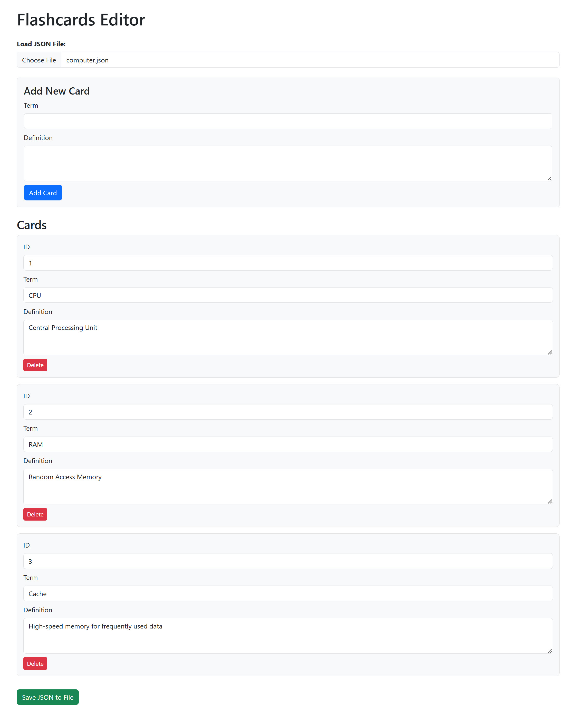
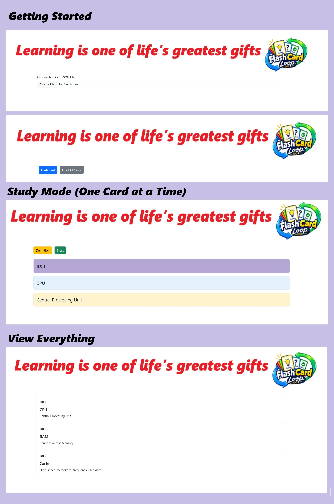
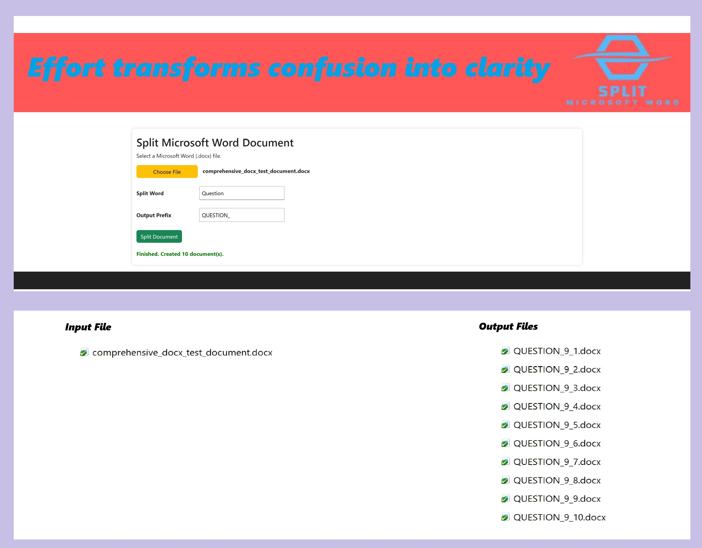

| Description | Screen Shot of Website |
|---|---|
Flashcards EditorFlashGeneratorLoop ApplicationFlashGeneratorLoop GitHub Sites The Flashcards Editor is a browser-based web application for creating, editing, managing, and saving flashcard data in JSON format. It provides a simple interface that allows users to maintain a collection of study cards without requiring a database or server-side application. Key Features
|
 |
Flashcards Viewer Application – How to UseFlashcards ApplicationFlashCardLoop GitHub Sites This simple flashcard tool lets you study terms and definitions from a JSON file. Getting StartedClick the file button and select a JSON file that contains your flashcards. Once the file loads, two buttons appear: Flash Card and Load All. Study Mode (One Card at a Time)
View EverythingClick Load All to display every flashcard on the page at once, showing ID, term, and definition for each one. |
 |
Split Microsoft Word Document
Split Microsoft Word Document is a simple, browser-based tool for dividing a Word
What It DoesThe application helps users break large Microsoft Word documents into separate files without needing to manually copy and paste content. How to Use It
Key BenefitIt streamlines document organization by turning one large Word file into a set of clearly named, manageable documents—saving time and reducing the risk of formatting issues caused by manual editing. |
 |
| ConfigLoop | Screen |
| FastGeneratorLoop | Screen |
| LearnLoop | Screen |
| DatabaseGeneratorLoop | Screen |
| LoopScript | Screen |